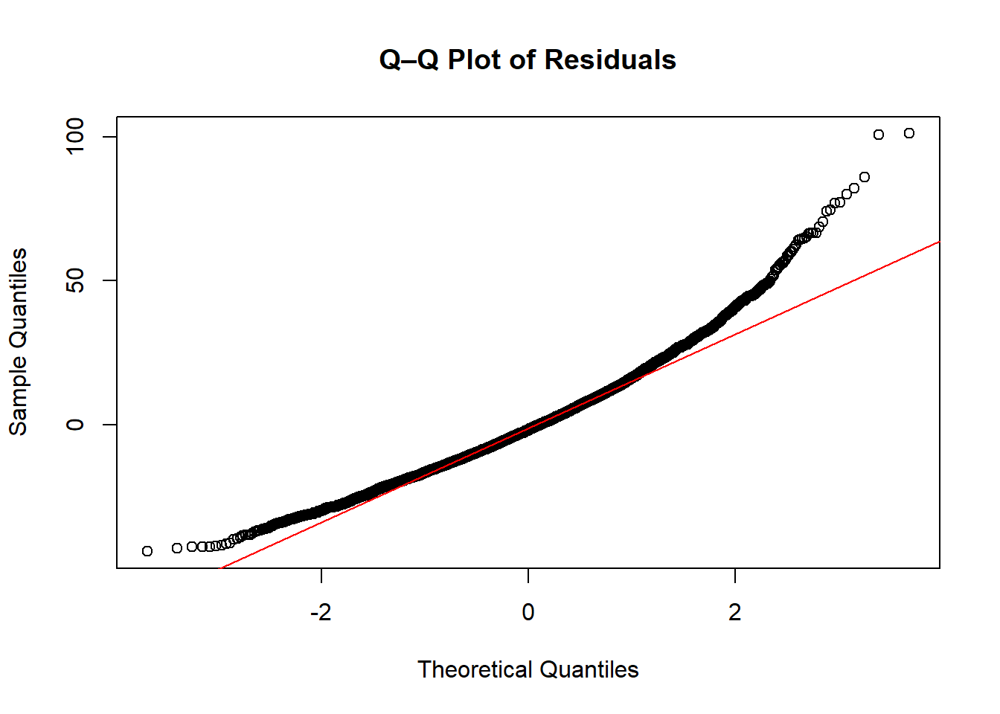
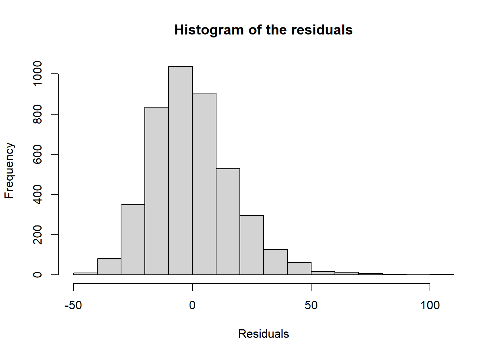

Correlation and Scatter Plot in R Running the scatter plot to check the relationship or correlation between BMI and systolic blood pressure. The scatterplot of BMI versus systolic blood pressure shows a very slight upward trend. This visual impression is confirmed by the Pearson correlation coefficient (r = 0.085), indicating a very weak positive relationship. The association is statistically significant (p < 0.001), but the narrow confidence interval (0.056 to 0.115) shows that BMI suggests only a small proportion of the variability in systolic blood pressure in this simulated Whitehall cohort.
Pearson's product-moment correlation
data: whitehall$bmi and whitehall$sbp
t = 5.6236, df = 4299, p-value = 1.989e-08
alternative hypothesis: true correlation is not equal to 0
95 percent confidence interval:
0.05571053 0.11504885
sample estimates:
cor
0.08545547
Running One-Way ANOVA in R The findings show that SBP varies among the four BMI categories, with a highly significant p-value of 0.0001. Nonetheless, ANOVA is an overall test and does not specify which specific BMI groups differ significantly from one another.
Df Sum Sq Mean Sq F value Pr(>F)
factored_white 3 6451 2150.4 7.024 0.000104 ***
Residuals 4297 1315528 306.2
---
Signif. codes: 0 '***' 0.001 '**' 0.01 '*' 0.05 '.' 0.1 ' ' 1
26 observations deleted due to missingness
Running a Linear Regression Model with Continuous Independent Variable The analysis shows a statistically significant positive association between Body Mass Index (BMI) and systolic blood pressure (SBP) in the Whitehall study data. The estimated regression coefficient for BMI is 0.45902 (p-value = 1.99e-08), meaning that for every one-unit increase in BMI, SBP is estimated to increase by 0.46 mmHg, on average. However, the model has very low predictive power, with an Adjusted R-squared of 0.007072 (less than 1%), indicating that BMI alone explains a negligible proportion of the variability in SBP.
regfit1 <-lm(whitehall$sbp~whitehall$bmi, data = whitehall)summary(regfit1)
Call:
lm(formula = whitehall$sbp ~ whitehall$bmi, data = whitehall)
Residuals:
Min 1Q Median 3Q Max
-43.087 -12.169 -1.710 9.831 101.667
Coefficients:
Estimate Std. Error t value Pr(>|t|)
(Intercept) 119.15237 2.07540 57.412 < 2e-16 ***
whitehall$bmi 0.45902 0.08162 5.624 1.99e-08 ***
---
Signif. codes: 0 '***' 0.001 '**' 0.01 '*' 0.05 '.' 0.1 ' ' 1
Residual standard error: 17.47 on 4299 degrees of freedom
(26 observations deleted due to missingness)
Multiple R-squared: 0.007303, Adjusted R-squared: 0.007072
F-statistic: 31.62 on 1 and 4299 DF, p-value: 1.989e-08
Running a Linear Regression Model with Categorical Independent Variable From the output above, the mean SBP rises with increasing BMI categories. Specifically, individuals in BMI group 4 (obese) have an average SBP that is 3.7 mmHg higher than those in BMI group 2 (normal weight) (95% CI: 1.7–5.6, p<0.001).
#Creating a new empty BMI Columnwhitehall$bmi.grouped <-NAwhitehall$bmi_fact<-factor(whitehall$bmi_grp4)is.factor(whitehall$bmi_fact)
[1] TRUE
table(whitehall$bmi_fact)
1 2 3 4
50 1793 2091 376
aggregate( whitehall$sbp, # x = systolic blood pressure valueslist(whitehall$bmi_fact), # group by BMI category factorFUN = mean, # calculate mean in each groupna.rm =TRUE) # remove NAs when computing mean
#Creating a copy of the dataset for running the second regression model with releveling of bmi dummy by setting reference categorywhitehall2 <- whitehall#By default R will use the lowest category of bmi_fact as the reference in a regression. But this category is the smallest and hence it is not a good reference category as all comparisons with it will have large confidence intervals. We can change the reference category using the ‘relevel’ function:whitehall2<-within(whitehall2, bmi_fact<-relevel(bmi_fact,ref=2))#Then we fit the same linear regression again:fit3 <-lm(sbp ~ bmi_fact, data=whitehall2)summary(fit3)
Call:
lm(formula = sbp ~ bmi_fact, data = whitehall2)
Residuals:
Min 1Q Median 3Q Max
-43.366 -12.239 -1.570 9.634 100.430
Coefficients:
Estimate Std. Error t value Pr(>|t|)
(Intercept) 129.5695 0.4134 313.389 < 2e-16 ***
bmi_fact1 -2.9095 2.5088 -1.160 0.246221
bmi_fact3 1.7966 0.5638 3.187 0.001449 **
bmi_fact4 3.6698 0.9926 3.697 0.000221 ***
---
Signif. codes: 0 '***' 0.001 '**' 0.01 '*' 0.05 '.' 0.1 ' ' 1
Residual standard error: 17.5 on 4297 degrees of freedom
(26 observations deleted due to missingness)
Multiple R-squared: 0.00488, Adjusted R-squared: 0.004185
F-statistic: 7.024 on 3 and 4297 DF, p-value: 0.0001041
Running a Multiple Linear Regression Model I ran a multiple linear regression model to examine the impact the association of BMI group on SBP, adjusted for LDL-C. As shown in the output, being overweight (BMI group 3), compared with normal weight (group 2), is associated with an average SBP that is 1.91 mmHg higher after adjusting for LDL-C (95% CI: 0.80–3.02, p=0.001). This association is slightly stronger for the overweight BMI group than it was before adjusting for LDL-C.
Adjusting for smoking status in the Multiple Regression model On average, being obese is associated with an SBP that is 3.7 mmHg higher than being normal weight after adjusting for LDL-C and current smoking (95% CI: 1.74–5.63, p<0.001). This association remained unchanged when additionally adjusting for current smoking.
Each covariate in the model can be interpreted as adjusted for the other covariates. For example, being a current smoker is associated with an SBP that is 0.56 mmHg lower compared to non-smokers, after adjusting for LDL-C and BMI group. However, the 95% CI includes the null value (0 in this case, since we are not using ratios; -2.15–1.02), indicating that this association is not statistically significant.
Call:
lm(formula = sbp ~ bmi_fact + ldlc + currsmoker, data = whitehall2)
Residuals:
Min 1Q Median 3Q Max
-43.857 -12.133 -1.698 9.869 101.087
Coefficients:
Estimate Std. Error t value Pr(>|t|)
(Intercept) 133.1638 1.2250 108.709 < 2e-16 ***
bmi_fact1 -3.8183 2.5372 -1.505 0.132420
bmi_fact3 1.8963 0.5664 3.348 0.000820 ***
bmi_fact4 3.6897 0.9928 3.717 0.000205 ***
ldlc -1.0536 0.3446 -3.057 0.002248 **
currsmoker -0.5632 0.8072 -0.698 0.485360
---
Signif. codes: 0 '***' 0.001 '**' 0.01 '*' 0.05 '.' 0.1 ' ' 1
Residual standard error: 17.48 on 4265 degrees of freedom
(56 observations deleted due to missingness)
Multiple R-squared: 0.007334, Adjusted R-squared: 0.006171
F-statistic: 6.303 on 5 and 4265 DF, p-value: 7.781e-06
Model Selection and F Test1. Testing if BMI contributes to model variation The results indicate that the F-statistic for testing the joint hypothesis that all BMI-related coefficients are zero is approximately 7.7, with a p-value below 0.001. Although the regression output suggests that not every BMI category is individually associated with SBP, the F-test demonstrates that, collectively, the BMI variable contributes significantly to explaining variation in the model (F[3, 4265] = 7.74, p < 0.001).
library(car)
Warning: package 'car' was built under R version 4.4.3
Loading required package: carData
Warning: package 'carData' was built under R version 4.4.3
Linear hypothesis test:
bmi_fact1 = 0
bmi_fact3 = 0
bmi_fact4 = 0
Model 1: restricted model
Model 2: sbp ~ bmi_fact + ldlc + currsmoker
Res.Df RSS Df Sum of Sq F Pr(>F)
1 4268 1310900
2 4265 1303805 3 7095 7.7364 3.76e-05 ***
---
Signif. codes: 0 '***' 0.001 '**' 0.01 '*' 0.05 '.' 0.1 ' ' 1
1. Testing if LDLC and smoking contributes to model variation We can see from the output that the null hypothesis is that both variables have a coefficient equal to 0. However, there is evidence to reject this null hypothesis (F[2,4265]=4.92, p<0.01). These variables are significantly contributing to model fit.
Linear hypothesis test:
ldlc = 0
currsmoker = 0
Model 1: restricted model
Model 2: sbp ~ bmi_fact + ldlc + currsmoker
Res.Df RSS Df Sum of Sq F Pr(>F)
1 4267 1306812
2 4265 1303805 2 3007.2 4.9186 0.007351 **
---
Signif. codes: 0 '***' 0.001 '**' 0.01 '*' 0.05 '.' 0.1 ' ' 1
Checking for Normality of Residuals using Both Q-Q Plot and Histogram Since the plots show slight skew, we will check for potential influential variables or outliers in our data.
qqnorm(resid(multiple_fit2), main ="Q–Q Plot of Residuals")qqline(resid(multiple_fit2), col ="red")

hist(resid(multiple_fit2), main="Histogram of the residuals", xlab="Residuals")

Check for outliers / influential points
The chart confirms no significant influential variables.